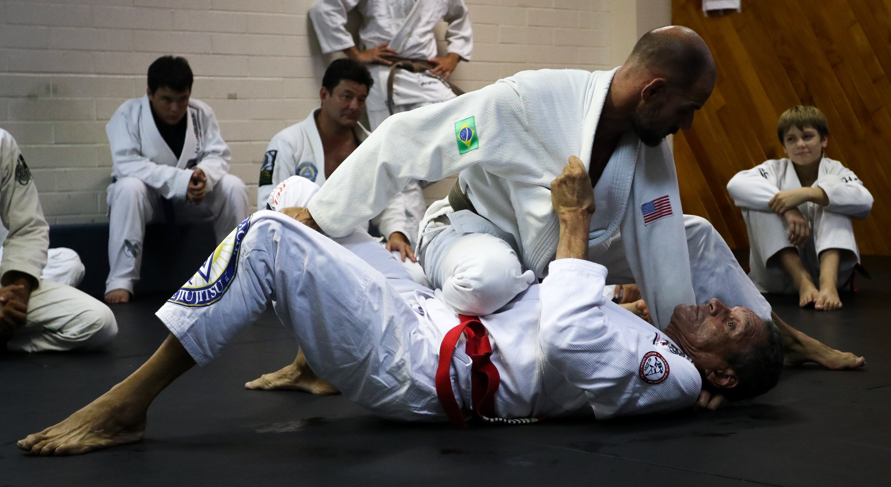
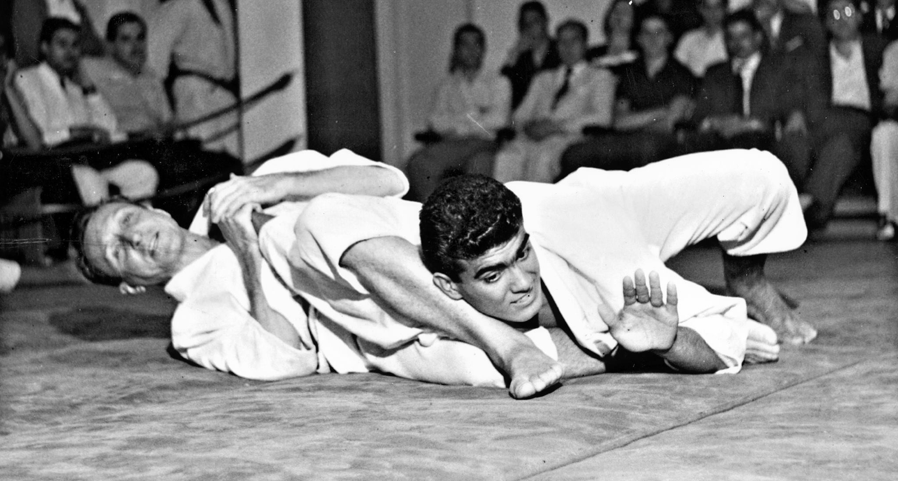
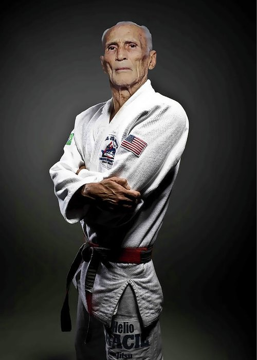
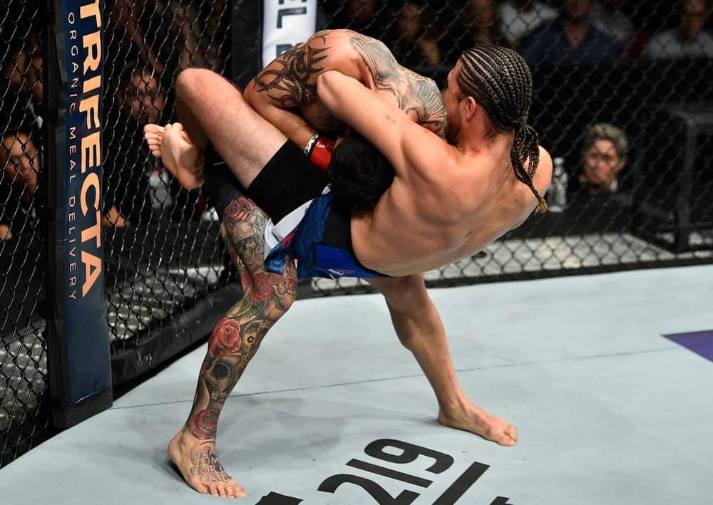
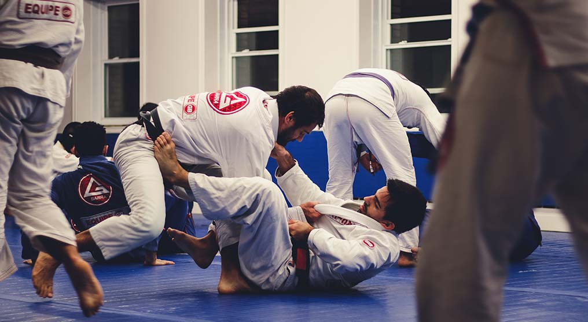
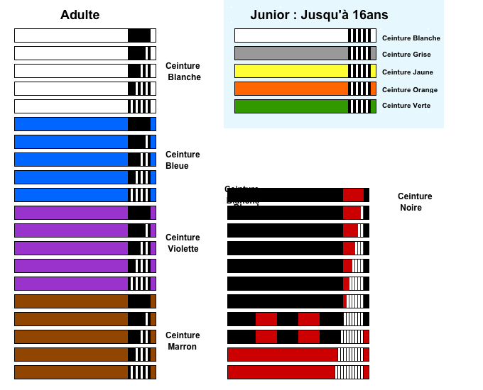

Le Jiu-Jitsu Brésilien c'est quoi ?
Qu'est-ce que le Jiu-Jitsu Brésilien ?

Le jujitsu brésilien est un art martial brésilien dérivé du jujitsu
japonais traditionnel (et qu’on connaît aujourd’hui sous le nom de judo)
qui se pratique principalement au sol et dont le but est de soumettre
l’adversaire par étranglement ou clé d’articulation. Les frappes (coups
de pied, poing, coude, tête et genou) volontaires sont interdites dans la
pratique officielle.
Communément surnommé «le jeu d’échecs humain », le jujitsu brésilien est
un art martial moderne qui puise sa quintessence dans la technique, le
timing et l’effet de levier plutôt que dans la force brute, permettant ainsi
de dominer des adversaires au gabarit plus imposant.
Un combattant de jujitsu brésilien s’appelle un jujitsuka. Il pratique son
art vêtu d’un gi de jujitsu (prononcé « gui ») appelé à tort kimono, bien que
ce soit passé dans le langage courant.
Comme son ancêtre le judo, le jujitsu brésilien possède de nombreuses
similarités et quelqu’un qui n’y connaît rien pourrait facilement les
confondre. Dans les 2 cas, on y retrouve:
- Des amenées au sol ;
- Des immobilisations au sol ;
- Des clés d’articulations ;
- Une absence de percussions (coups de poing, pieds, etc.).
Mais quelle est la différence entre le judo et le jujitsu brésilien?
Alors que le judo met l’accent sur les projections pour amener
l’adversaire au sol et les immobilisations, le jujitsu brésilien se
focalise principalement sur le combat au sol et la soumission par étranglement ou clé.
L'histoire du Jiu-Jitsu Brésilien

L'histoire du Jiu-Jitsu Brésilien remonte au début des années 1900.
En 1904, le fondateur du Judo ,Jigoro Shikano , a invité un de ses disciples,
Mitsuo Maeda, aux États-Unis pour promouvoir de nouveaux arts martiaux sur
le continent américain.
Après quelques années aux États-Unis, Maeda Mitsuo
s'installe à Belem au Brésil. De plus, il a activement participé à
l'établissement de la communauté japonaise dans le pays. Lors de son séjour
à Belém, il participe à la lutte libre (vale tudo ou luta livre) organisée
par la ville. Il s'est imposé avec succès comme un combattant puissant,
démontrant ainsi l'efficacité des arts martiaux japonais.
Maeda Mitsuo a
ensuite ouvert une école pour enseigner le judo, le Jiu-Jitsu. L'un de ses
élèves était Carlos Gracie, le fils de Gastão Gracie, un homme politique
influent qui l'aida à s'installer au Brésil.
Maeda Mitsuo a enseigné à Carlos Gracie toutes les techniques de Jiu-Jitsu,
même celles qui étaient exclusivement utilisées par les combattants d'élite japonais.
Carlos Gracie a alors commencé à ajouter de nouvelles techniques au Jiu-Jitsu actuel
et a ouvert sa propre école en 1925. Ensuite, il a transmis à ses frères les techniques
qu'il a apprises de Mitsuo Maeda et les techniques qu'il a apprises de Mitsuo Maeda...
Le fondateur du Jiu Jitsu Bresilien : Helio Gracie

C’est pourtant Hélio Gracie, le plus jeune frère de Carlos qui a révolutionné cet art martial
et lui a donné la forme qu’il a aujourd’hui.
En effet, Hélio a dû adapter sa technique de combat pour compenser sa faible constitution notamment
devant des combattants de grand gabarit.
Il est d’ailleurs considéré comme l’un des plus grands maitres au Brésil et l’un des fondateurs du
Jiu Jitsu Brésilien.
C’est finalement grâce à la famille Gracie que le JJB a pu être développé et popularisé en Brésil
et partout dans le monde par la suite.
Jiu Jitsu Bresilien : L’ère de l’UFC et des arts martiaux mixtes

Le fils aîné d'Helio, Rorion Gracie, a fait connaître Gracie Jiu Jitsu en
cofondant l'Ultimate Fighting Championship (UFC). En 1993, il a organisé
une rencontre où plusieurs champions de sports de combat et d'arts martiaux
se sont réunis pour voir quel sport était le plus efficace. Avant que JJB ne
s'enracine dans l'entraînement au combat, son frère Royce a remporté plusieurs
versions de l'UFC au début.
À la surprise générale, le maître JJB, connu à
l'époque sous le nom de Gracie Jiu Jitsu, a pu remporter le championnat devant
des combattants de renom tels que le judo, la lutte, le boxeur et le karaté.
Il
été choisi par la famille Gracie pour les représenter car il est l'une des
personnes les plus petites de la famille. Cependant, il dominait des adversaires
plus gros qui ne connaissaient rien aux bases.
Quel est le principe du Jiu Jitsu Brésilien ?

Le Jiu-Jitsu Brésilien consiste à neutraliser son adversaire en se concentrant
sur le combat au sol sans lui donner le moindre coup. L'objectif est de permettre
à une personne de gagner la bataille quelle que soit sa taille ou son poids grâce
à l'utilisation de techniques spécifiques. En un sens, c'est un art martial qui
permet aux faibles de vaincre les forts !
À cette fin, JJB se concentre sur le
développement de l'intelligence tactique, une bonne gestion émotionnelle, le
contrôle de la respiration et la bonne utilisation de l'énergie mentale et
musculaire. Les fans de Jiu-Jitsu brésilien doivent commencer le jeu le plus
calmement possible et doivent savoir placer ses jambes et ses bras sur les bons
points d'appui.
Au combat, il doit bien gérer son énergie et repenser constamment
sa stratégie de combat. Le but est d'utiliser la confusion et les erreurs de
l'adversaire pour le vaincre.
Quelles sont les ceintures et les grades du Jiu Jitsu Brésilien ?

Comme d'autres arts martiaux tels que le judo et le karaté, le JJB utilise
un système de ceinture de couleur pour marquer la progression des adeptes.
Le système change généralement en fonction de l'âge de l'adepte. Par
conséquent, les enfants de moins de 16 ans connaîtront différentes
ceintures : Blanc, puis gris, jaune, orange, vert et enfin bleu.
Il y a 4 barrettess de progression marquées sur chaque ceinture.
Les nouveaux
pratiquants adultes commencent par la ceinture blanche. Puis ils passent aux
ceintures bleue, violette, marron et noire, en utilisant le même système
intermédiaire : 4 barrettes.
A partir de la ceinture noire, le pratiquant
peut augmenter son niveau jusqu'à obtenir la ceinture rouge-noir et la
ceinture rouge-blanc (niveau 9). La ceinture rouge (10 degrés) est
généralement réservée aux pionniers du JJB.